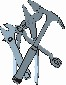

Artifacts >
Artifacts >
 Environment Artifact Set >
Environment Artifact Set >
 Development Infrastructure... >
Development Infrastructure... >
 Tools
Tools
Artifacts >
Environment Artifact Set >
Development Infrastructure... >
Tools
Artifact:
| ||||||||||
 Tools |
The tools to support the software-development effort. |
| Role: | Tool Specialist |
| More information: | |
A software-engineering process requires tools to support all activities in a system's lifecycle.
See Concepts: Supporting Tools for more information.
The environment is equipped with tools in time for when they are needed in the development. Note that with an iterative approach you go through the entire lifecycle in the first or second iteration which means that the environment needs to be set up early on in the project lifecycle.
The tool specialist is responsible for providing supporting tools that works.
Tools capture the minimum environment requirements to implement the process.
With mega-programming support (object-oriented CASE tools, middleware, reusable libraries), rapid architecture iteration is possible.
With automated documentation, change management, and regression test support, software changes are feasible to enable efficient iteration.
Powerful host/target compiler families with incremental compilation and good turnaround times enable projects to work productively in compilable/executable source languages.
If the metrics are not automated and non-intrusive to the majority of developers, they will be avoided rather than embraced.
Tailoring of this artifact should be documented in the Artifact: Tool Guidelines.
|
Rational Unified
Process
|